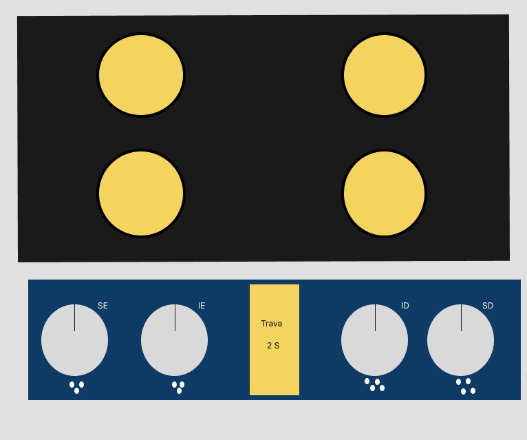

1. Apresentação do Projetista
Olá! Meu nome é Felipe de Souza Bento, estudante e projetista de interfaces focado em criar soluções digitais e físicas verdadeiramente inclusivas.
Acredito que o design não deve apenas ser esteticamente agradável, mas fundamentalmente funcional e empático. Dispositivos do dia a dia, como um fogão, costumam apresentar barreiras graves para pessoas com deficiências visuais, motoras ou cognitivas. O papel do projetista é eliminar essas barreiras por meio da empatia, aplicando padrões de acessibilidade e usabilidade para devolver a autonomia e garantir a integridade física de todos os usuários.
2. Nova Interface do Fogão (InclusiveCook)

Conceito e Princípios de Design Inclusivo
O Fogão Acessível é um modelo de cooktop (fogão de mesa sem forno) projetado sob o princípio universal do design inclusivo. Sua estrutura elimina completamente os riscos comuns de queimaduras e dificuldades de alcance.
Necessidades Atendidas e Inclusão Multissensorial
- Cadeirantes, Pessoas de Baixa Estatura ou com Nanismo: O painel de controle foi movido para a parte frontal inferior com uma inclinação de 45 graus, permitindo visualização e acionamento confortáveis para quem está sentado ou possui alcance reduzido.
- Deficiência Visual (Cegueira e Baixa Visão): Botões giratórios físicos com encaixes anatômicos para os dedos, relevos em Braille ao lado de cada comando, respostas táteis (clicks marcantes a cada nível de chama) e aviso sonoro de confirmação e de segurança.
- Daltonismo e Baixa Acuidade Visual: Textos grandes, ícones de alto contraste (fundo escuro e símbolos amarelos/brancos) e ausência de dependência única de cores para indicação de estado.
- Segurança Geral: Sistema de indução com travamento de segurança automático e sensores que detectam o aquecimento residual da superfície.
Aplicação Estratégica de Elementos de Interface
Seguindo as diretrizes de acessibilidade (WCAG) e garantindo bom contraste:
- Cores e Formas: O painel utiliza fundo azul escuro com marcadores em amarelo de alta visibilidade, garantindo leitura sob qualquer iluminação sem confundir daltônicos. Os botões possuem formatos geométricos distintos para indicar a qual queimador correspondem.
- Sons e Texturas: Sinais sonoros com frequências distintas diferenciam "Aviso de Segurança" de "Confirmação de Ligue/Desligue". A superfície dos botões conta com textura emborrachada antiderrapante.
3. Manual de Utilização Acessível
Nota de Escopo: Este equipamento é um modelo estritamente sem forno (cooktop), projetado para otimização de espaço e máxima acessibilidade de bancada.
Recursos e Recursos Assistivos do Sistema
O painel do Fogão Inclusivo possui sintetizador de voz integrado e avisos sonoros nativos para auxiliar pessoas com deficiência visual e auditiva durante toda a navegação, eliminando a necessidade de telas complexas.
Guia Passo a Passo de Operação
- Desbloqueio do Painel (Botão Amarelo Trava 2s): Pressione o botão central de segurança por 2 segundos. Um "bip" duplo e contínuo soará, indicando que o fogão está pronto para uso.
- Identificação do Queimador: Localize o botão correspondente à boca desejada através das siglas visuais de alto contraste (SE, SD, IE, ID) ou pelos pontos táteis em Braille gravados abaixo de cada botão rotativo.
- Acionamento e Ajuste de Temperatura: Gire o botão no sentido horário. A cada nível atingido (1 a 5), um clique mecânico perceptível ocorrerá e o sistema emitirá um sinal sonoro curto confirmando a potência.
- Desligamento: Gire o botão no sentido anti-horário até a posição inicial com o ponteiro na vertical. O sistema emitirá um tom grave confirmando o desligamento daquela área.
Dicas de Segurança Acessíveis
| Recurso de Segurança | Funcionamento / Feedback Acessível |
|---|---|
| Alerta de Superfície Quente | Luz indicadora de alto contraste no painel frontal e pulsação sonora intermitente ao aproximar a mão antes do resfriamento total. |
| Corte Automático de Gás/Energia | Se nenhuma panela for detectada após 30 segundos de acionamento, o fluxo cessa automaticamente e o fogão emite 3 bips longos. |